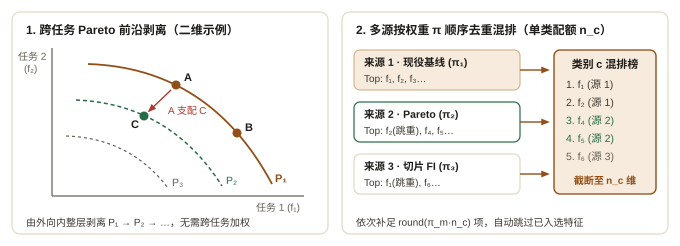
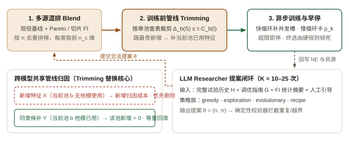
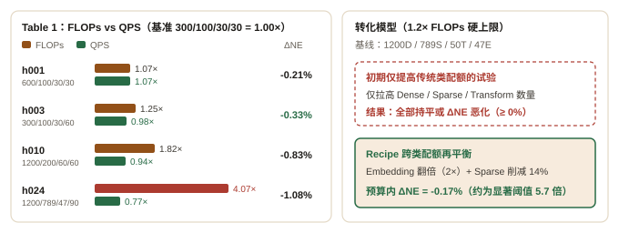
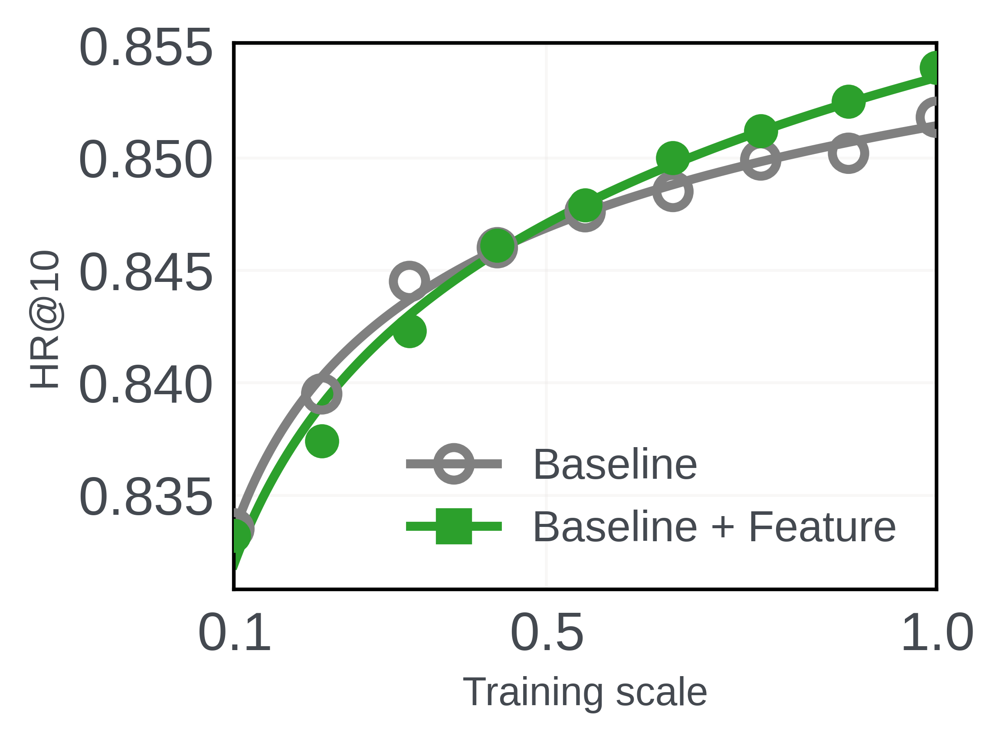
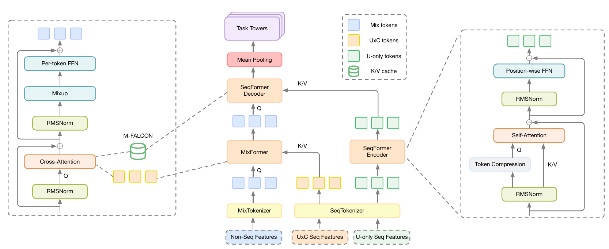
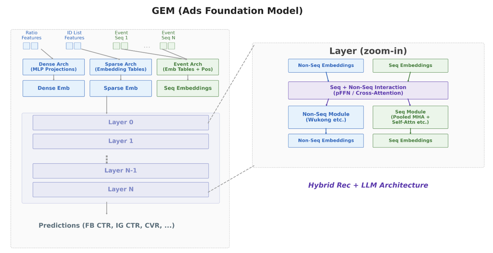
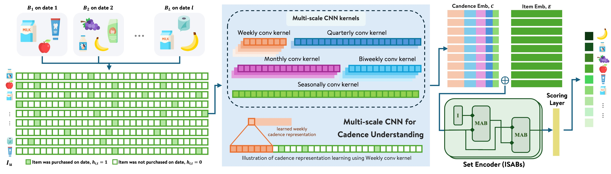

Meta 广告精排特征优化系统拆解：成本感知的代理搜索与共享管线裁剪
在大型广告推荐平台中，线上往往同时运行着一支庞大的精排模型舰队（fleet，指平台同时维护的多业务精排模型集合），分别承接不同流量场景与转化目标，而每个模型都需要从数万维的共享特征池中挑选自己的输入子集。长期以来，大多数团队的做法都是沿袭上一代现役基线模型（incumbent，即线上当前运行的模型）的特征清单再做手工增删。近年虽已出现基于 LLM 的特征选择、特征工程及端到端 ML 实验代理工作，但论文指出这些工作均以单个孤立模型为研究对象。本文在此基础上进一步纳入了线上两类成本约束。一类是单模型独享的在线服务成本上限（吞吐 QPS、延迟、内存）。另一类是跨模型共享的上游特征管线预算（pipeline cost，包括特征计算查询、源数据存储与训练日志落盘）。Meta 在 arXiv:2611.26531（Cost-Aware Agentic Feature Optimization System for Fleet-Scale Ranking Models）中给出的工程解法，核心不在于让大模型直接端到端挑特征，而是围绕这两类成本重构了特征生成、排序混排与约束搜索的分工边界。要理解这套系统为何有效，需要先看清不同特征类型在硬件与存储上的物理成本差异。
四类特征成本与两阶段交叉生成
论文将精排模型的输入层按物理开销拆分为四类特征。dense 特征以标量喂入 MLP，单特征开销最低。sparse 特征是变长 ID 列表，需查询模型内部 embedding table，主导模型内存并带来查表开销。embedding 特征是上游产出的定长向量，不占内部 embedding table。这类大向量的存储与日志落盘昂贵，推理阶段还带来每特征一次的 MLP 投影矩阵乘。transform 特征（典型代表是交叉特征）在模型内部基于其已接收的输入特征派生，前提是所依赖的原始输入本来就在模型中。不过，独立类别选型或 Trimming 改变输入之后，transform 对原始输入的依赖如何维护，仍是机制上的缺口。若后续配额截断或 Trimming 移除了某 transform 所依赖的原始输入，系统是保留该依赖、同步剔除该 transform，还是继续读取并计费该原始输入，文中均未说明。因此，不能无条件认为这类特征在四类特征独立选型或替换后仍不产生额外上游开销。不同部署硬件（如 GPU 与 CPU serving）对查表开销与矩阵乘开销的敏感度不同，sparse 与 embedding 谁更拖累服务吞吐并不固定（原文指出了这一硬件依赖，但实验部分未展开 GPU 与 CPU 的对比评测）；同时，四类特征的边际收益递减曲线各不相同。这意味着仅按原有比例扩大特征量往往容易先触及资源上限，优化的关键通常在于跨类别配额的再平衡。
在这四类特征中，模型内部派生的交叉特征对广告点击与转化预估帮助显著，却最容易使候选空间膨胀。论文将交叉特征推广为变换 ，即对输入池 的子集 施加算子 （如 n-gram、ID matching、分桶等）。即使只考虑二阶交叉，候选变换集 的规模也达到 ，原文指出其量级可达数千万。由于后文的特征排序（FI）流水线需要把全部候选纳入全量模型进行训练与评估，若直接将 送入该流程，远未达到数百万量级就会先触发内存溢出（OOM）。
为此，系统将交叉特征的生成与筛选拆解为衔接紧密的三步：
- LLM 召回（Recall）：平台维护一个跨模型共享的 Signal database，存储每个原始特征的静态元数据（名称、血缘、聚合窗口、覆盖率、LLM 生成的语义描述）以及模型级统计信号（重要性与交互分，交互分的具体计算公式未见诸公开材料）。论文描述由一个共享的检索 LLM 通过单次前向推理为候选变换打分，筛出远小于 的前 个候选项作为 shortlist；但原文既未披露原始特征信号、候选变换 与目标模型信息如何拼接或编码进单次前向打分的输入（同一个共享模型面向不同目标模型区分打分的完整输入路径并未交代），也未披露数千万级候选下的批处理/前置粗筛架构与 的具体量级。
- FI 精排（Precision）：召回出的 个候选交叉特征直接并入该模型的全量特征池，交由下一节的特征排序流水线统一评估真实重要性分数，而非单独再跑一套重复的 FI 流程。
- 跨模型闭环微调：各模型在特征排序中产出的交叉特征 FI 分数会被回收作为监督标签，持续微调全舰队共享的同一个检索 LLM，以期随已优化模型数量增加持续改善特征生成质量（具体如何区分不同目标模型的输入条件以及该微调的独立收益均未在文中披露）。
经 LLM 召回将数千万级候选变换压缩至 并并入原始池后，合并后的合规候选池已可供离线特征排序训练一次全量打分模型；但对线上服务模型而言，这一候选池仍超出单个模型在资源约束下能够实际选用的特征规模，接下来就需要通过特征排序与混排为全池特征建立价值次序，再由后续约束搜索选出受控子集。
多任务特征排序与跨源混排
特征排序（Feature Ranking）阶段的思路很直接：在剔除数据治理与隐私约束禁选特征后的完整候选池（包含上述新召回的交叉特征）上，仅训练一次离线全量模型，再从中计算各特征的归一化重要性分数（单任务与聚合口径均归一化至和为 ）。原文将这一非 LLM 的算法模块归类为与代理推理相对的「确定性工具」，但需要说明的是，其集成的具体评估器内部仍依赖随机打乱或蒙特卡洛采样近似。最轻量的 permutation importance 在评估 batch 内随机打乱某特征值并观测 loss 增量，容易系统性低估高度相关的特征。因此，系统同时集成了 Shapley value sampling 与 Kernel SHAP。前者按随机排列计算加入特征后的平均边际 loss 降幅，后者对采样特征联盟做加权线性回归以估计 Shapley 值。此外，上述任意评估器都支持切换为 segment-aware 变体，只在占比很小但商业价值很高的流量切片（例如头部营收分桶的高价值用户）上单独训练和打分。这样做可以防止仅对高价值流量有效的特征被全局均值淹没。也就是说，全量全局排序只需训练一次全量模型，若额外启用切片评估，则需在对应流量切片上额外执行训练与打分（切片变体的额外算力占比未见诸公开材料）。
拿到各评估器在单任务或切片上的打分后，便进入特征混排（Feature Blending）阶段，用于解决两类排序合并问题。首先是跨任务合并：线上广告精排模型常同时预估点击、转化等 个目标，不同任务头的 loss 量级甚至任务类型（分类与回归）各异，直接加权求和既依赖人工调权，又难以在迭代中稳定维护。系统采用跨任务 Pareto 最优排序绕开任务权重：将特征 在 个任务上的重要性记为向量 ；若对所有任务 均有 且至少在一个任务上严格大于，则称特征 支配 。不被任何其他特征支配的特征构成第一层前沿 ，将其移出后对剩余特征递归剥离，依次得到 ，直到累积数量刚好覆盖预算 （即取满足 的最小 ）。由于支配比较仅在单一任务内部进行，在比较环节无需跨任务归一化，也避免了仅对某一关键任务极强的特征在跨任务加权中被直接埋没；但这并不保证其最终入选——最后一层前沿 的截断规则未见单独给出以及后续多源混排与配额截断，仍可能将这类单任务特征淘汰。
其次是跨来源混排：为避免单一排序口径的偏差，系统将 个来源的榜单按比例向量 （满足 ）进行混合拼装。来源包括线上已验证的现役基线模型排序，以及前述各 FI 评估器产出的全局、切片、单任务或跨任务 Pareto 排序。算法按预设顺序依次遍历每个来源 ，从其榜单顶部挑选尚未入选的特征，直到贡献满 个名额，从而避免重复入选。实际进入后续搜索阶段时，这套混排逻辑会针对四类特征分别独立执行，每类按各自的配额 截断。需要补充的是，原文在混排细节上有三处未作展开：一是最后一层前沿 累积超出预算时的层内截断与排序规则，二是现役基线榜单本身的具体排序来源，三是固定遍历顺序在去重时对靠后来源可能带来的顺位偏差。 Hoot 说



出处
论文图解不过，即便四类特征各自拿到了去重后的混排榜单，直接按排名自上而下截断仍无法兼顾单模型在线服务上限与跨模型共享的上游管线预算；与此同时，工业级精排模型单次训练耗时数小时至数天，不可能直接在数万维离散特征子集上做穷举试错。要让昂贵的训练评估与两类硬约束真正进入决策闭环，必须先把搜索空间大幅降维。
约束搜索与共享管线裁剪
约束搜索模块的核心做法，是将万维级的离散特征选集压缩为极低维的超参优化问题。记四类特征集合为 ，类别 的候选池为 ，搜索阶段的禁选集为 （涵盖隐私、合规与覆盖率限制）， 表示按混合权重 混排出的前 个特征。只要指定每类特征的配额向量 和混排权重 ，整个输入特征集 就由 唯一确定：
优化目标是最小化 Normalized Entropy（NE，广告分类预估常用的归一化对数损失，越低越好；论文口径中相对现役基线的 NE 降幅超过 ，即 ，视为统计显著），同时将各项单模型服务资源压在相对现役基线配置 的倍率上限 以内：
这里有两处模型口径值得留意：其一，前文在排序阶段强调了精排模型的多任务（含分类与回归头）特性，但搜索阶段的目标函数坍缩为单一标量 ，原文未明确说明多任务场景下此处是仅取主分类任务 NE 还是做了多任务汇总；其二，论文开篇将单模型服务成本界定为吞吐、延迟与内存三项，但在上述显式约束集合 中只纳入了吞吐与内存（吞吐用单样本推理 FLOPs 代理如 ，或将实测服务吞吐写成 以统一为上界约束；延迟未直接入式），而到了后文实证部分则只汇报了 FLOPs 与实测 QPS，未披露内存与延迟的实测数据。受限于单次训练数小时至数天的周期，单轮优化的总试验预算只有 次，并发槽位 个。为避免搜索走到不可控的极端配比，系统还会为每类特征数量设定围绕现役基线的经验区间作为启发式边界。
观察上面的优化式可以看到，约束集合 只限制了单模型服务成本，跨模型共享的上游 pipeline cost 并没有放进训练后的约束检查。原因很实际：上游管线成本可以通过元数据表在训练前直接查算，没有必要消耗数小时训练算力后再判定违约。论文在这里利用了跨模型共享的成本归因结构：一条特征的上游管线成本在所有使用该特征的预算池之间分摊。这里的预算池（budget）指按业务或计费归属划分的上游特征管线预算账户，单模型可能同时向多个关联预算池计费。但原文既未披露跨预算池的具体分摊权重公式，也未说明当使用某特征的预算池集合发生变化时，各池归因成本 是否会随之动态重算。在单个预算池 内部，论文指出只要已经有其他模型在使用某特征，当前模型再选用它就不会为该预算池新增管线开销；只有当预算池 内没有其他模型使用该特征时，当前模型增删它才会改变预算池 的归因成本。
论文要求每次试验在模型计费的每个关联预算池 上都满足 （其中 为将现役基线特征集 替换为候选集 后预算池 的归因管线成本变化， 为现役基线 归因到预算池 的原管线成本； 表示保持该预算池成本不超支， 允许有限扩张， 要求净降本）。若进一步假设各特征归因到预算池 的单池成本 在候选变更期间保持固定，记预算池 内其他模型正在使用的特征集合为 ，则单池的局部增删成本变化可近似写为：
在启动训练前，确定性的 Trimming 模块直接扫描 ，将导致超支的新增独占特征按开销从高到低逐个剔除，并从同一类别的混排榜单中挑出排名最高、且已被当前预算池 内其他模型使用的零新增成本特征（）回填空槽。这样一来，每类特征数量 保持不变，推理 FLOPs 基本不受影响。不过，论文所描述的这一过程并不能自动证明所有关联预算池在训练前均已联合受控，至少存在三处未披露的机制边界：（1）前述回填仅保证在当前预算池 、 且同类别有足够 候补特征的前提下不新增成本；若单模型同时向多个预算池计费，针对后一个预算池的回填可能引入前一个预算池未使用的特征而重新导致前者超支，原文虽要求每个关联预算池均可行，但未披露多预算池如何联合维护可行性；（2）由于未披露跨池分摊权重公式以及使用池集合变化时是否重算 ，仅凭单个池内的局部增删差值也无法断言全部关联预算池自动受控；（3）若设定 且候选集 保留了大量原现役基线独占特征，仅删除新增独占特征最多只能使 回到 ，原文同样未披露此类残余不可行情况的算法处理（其后文实证也仅在 下完成）。
在搜索空间大幅降维、并引入训练前管线 Trimming 之后，能否在 次昂贵试验内找到显著增益，取决于负责提出假设的 LLM Researcher 如何与确定性调度框架协作。系统在这里划出了清晰的责任边界：LLM 只负责基于历史提出假设，所有校验、裁剪、调度与终选裁决全部由确定性代码执行。Researcher 在一个长上下文会话中持续读取完整试验历史 、调优指南 （含各类特征的经验范围、优先级以及单位特征预估的 与 FLOPs 开销）、从 FI 排序提取的统计摘要（原文称 facts computed from the FI ranking，未列出具体统计字段）以及工程师提供的自由文本引导。每次提案都附带文字理由，并归入四种提案策略族（原文 behavior family）之一：greedy（围绕当前优解微调）、exploration（跳出局部探索边界）、evolutionary（对历史多个优解做组合或变异）和 recipe（预定义的结构化经验策略，例如针对 sparse 数量约为 embedding 10 倍的模型，砍掉低分 sparse 换入高分未用 embedding）。
提案必须先通过确定性校验器（拦截重复提案、越界或超范围参数）与训练前 Trimming 才能进入训练队列。初始提交 个合法试验后，调度器进入双频率异步循环：快循环每隔 检查并发槽位，一有任务结束或失败就立即让 Researcher 补交新假设；慢循环每隔 定期回读在跑任务的 NE 与资源指标（虽然理论 FLOPs 可静态估算，但训练过程中的 NE 曲线与实测 QPS 等服务指标需随评估周期读取；原文未进一步讨论为何不将纯静态的 FLOPs/内存校验完全前移至启动前），一旦任一 超出 上限即刻 early-stop，并刷新 NE–资源 Pareto 前沿。全部 次试验结束后，最终胜出方案由预先写死的硬规则选出（满足全部资源上限且 NE 严格低于现役基线，否则回退现役基线），LLM 无权覆盖该决定。 Hoot 说


出处
论文图解展开参考：Algorithm 1 异步约束搜索与 Trimming 核心伪代码
下面将论文 Algorithm 1 的双循环异步调度与训练前 Trimming 机制整理为 Python 风格伪代码（与原文符号一致；fi_facts 来自前序 FI 排序。需要说明的是，原文仅描述了在当前预算池 上「删最贵新增、以同池已用同类特征回填」的单池过程，并未披露跨池分摊重算、多预算池联合可行性维持，以及新增独占特征删空后仍超预算时的残余处理算法；因论文要求每次训练试验均满足所有计费预算池，以下伪代码对未达标集合返回 None 而非放行训练）：
def trim_pipeline_cost(S_theta, blended_rankings, budget_pools, incumbent_I, tau):
"""按论文描述的单池裁剪逻辑示意：删去最贵新增独占特征并以当前池已用同类特征回填。
注：跨池分摊是否重算、多预算池联合维护及残余不可行情况的算法原文均未披露；
因论文要求每次训练试验均满足所有计费预算池，未达标时返回 None 而非放行训练。"""
S = copy_by_category(S_theta)
for b in budget_pools:
limit = tau * attributed_cost(b, incumbent_I)
# 仅在当前预算池 b 内保证回填为零新增成本（跨池分摊 c_b(f) 是否随使用池变化而重算，未见单独给出）
while delta_cost(b, S, incumbent_I) > limit:
costly_adds = [
(cat, feat, attributed_marginal_cost(b, feat))
for cat, feats in S.items()
for feat in feats
if feat not in incumbent_I and not used_by_other_models(b, feat)
]
if not costly_adds:
# 剩余不可行情况（如 tau < 0 且新增独占特征已删空）的处理算法未见单独给出，不可放行训练
return None
cat, drop_feat, _ = max(costly_adds, key=lambda x: x[2])
# 从同类别混排榜挑出排名最高、且已被当前预算池 b 其他模型使用的特征回填
replacement = next(
(f for f in blended_rankings[cat]
if f not in S[cat] and used_by_other_models(b, f)),
None,
)
if replacement is None:
return None # 同池同类候补不足时的处理逻辑未见单独给出，不可放行训练
S[cat].remove(drop_feat)
S[cat].add(replacement)
# 论文要求全部关联预算池均可行，但未披露后池回填破坏前池时的联合修复算法
if not all(delta_cost(b, S, incumbent_I) <= tau * attributed_cost(b, incumbent_I) for b in budget_pools):
return None
return S
def async_feature_search(theta_0, I, K, W, rho_caps, tau, guide_G, fi_facts):
H = [] # 完整试验历史（持久化为 Researcher 上下文）
running, submitted = [], 0
# 1. 初始填满 W 个并发槽位
while len(running) < W and submitted < K:
h = researcher_propose(H, guide_G)
if validate(h, H, guide_G):
S_h = trim_pipeline_cost(build_subset(h.theta), h.rankings, h.budgets, I, tau)
if S_h is not None:
running.append(launch_async_train(h, S_h))
submitted += 1
# 2. 双循环异步调度：快循环补槽，慢循环监控并早停
while running or submitted < K:
wait_fast_interval()
finished, running = partition_terminal(running)
H.extend(finished)
if slow_interval_elapsed():
for job in list(running):
ne_h, res_h = measure_metrics(job)
if any(res_h[k] > rho_caps[k] * res_0[k] for k in rho_caps):
early_stop(job)
running.remove(job)
H.append(mark_early_stopped(job, ne_h, res_h))
update_pareto_frontier(H)
while len(running) < W and submitted < K:
h = researcher_propose(H, guide_G, fi_facts, operator_steering())
if validate(h, H, guide_G):
S_h = trim_pipeline_cost(build_subset(h.theta), h.rankings, h.budgets, I, tau)
if S_h is not None:
running.append(launch_async_train(h, S_h))
submitted += 1
# 3. 确定性硬规则裁决胜出者（LLM 不可覆盖）
feasible = [
h for h in H
if all(h.res[k] <= rho_caps[k] * res_0[k] for k in rho_caps) and h.ne < ne_0
]
return min(feasible, key=lambda h: h.ne) if feasible else (theta_0, I)这套异步约束搜索与前置裁剪闭环在设计上环环相扣，但放到实际生产模型中究竟能带来多大收益、各类成本与精度之间如何权衡，需要结合论文的离线与线上实验数据具体拆解。
离线探索、管线裁剪与线上实证
论文首先展示了一组 25 次试验的完整搜索轨迹，所有试验均在与基线相同的数据窗口上训练。该基准模型的初始特征配比为 300/100/30/30（下文统一按 dense / sparse / transform / embedding 顺序表示）。这里有一个必须提前说明的实验口径：论文目前报告的所有特征搜索实验，全部只调优各类配额 ，混排权重 保持固定（作者明确说明 调优功能已实现，但尚未完成实验评测）。此外，这组 25 次试验是否设置了严格的 硬上限——从 h024 的 FLOPs 达到 、QPS 降至 来看，该组展示的是宽约束或探索模式下的完整 NE–QPS 前沿。将原文 Table 1 列出的核心前沿试验整理如下：
| 试验编号 | 特征配比 (D/S/T/E) | 提案策略族 | 相对 FLOPs | 相对 QPS | 工程观察 | |
|---|---|---|---|---|---|---|
| Baseline | 300 / 100 / 30 / 30 | — | — | 基准对照 | ||
h006 | 150 / 50 / 15 / 15 | exploration | 全类减半，吞吐最高但精度损失过大 | |||
h001 | 600 / 100 / 30 / 30 | greedy | 仅 dense 翻倍，FLOPs 微升而实测 QPS 反涨 | |||
h003 | 300 / 100 / 30 / 60 | exploration | 仅 embedding 翻倍，QPS 仅降 2% 即获显著增益 | |||
h010 | 1200 / 200 / 60 / 60 | greedy | 四类同步扩量，性价比拐点显现 | |||
h024 | 1200 / 789 / 47 / 90 | evolutionary | 后期演化出最优精度，FLOPs 大幅攀升但 QPS 降幅平缓 |
顺着这张表横向观察，有两处现象与常见直觉经验并不一致。第一，理论算力 FLOPs 与线上实测 QPS 之间高度非线性：h001 将 dense 翻倍到 600，FLOPs 升至 ，实测 QPS 却不降反升到 （原论文图 2(a) 的误差棒标明了 3 次独立测量的 标准差）；而到了 h024，四类特征全面扩量后 FLOPs 达到 ，实测 QPS 仍保留在 。这说明单用 FLOPs 代理服务吞吐在不同配比区间里存在明显偏差，也解释了为何系统支持直接将 纳入约束。第二，对比 h001 与 h003，将 300 维 dense 翻倍带来 NE，而只将 30 维 embedding 翻倍到 60，在 QPS 几乎持平（）的代价下便取得了 NE。
另一组更具针对性的实证来自一条独立的生产 per-event conversion 模型：它的现役基线配比已经较大（1200/789/50/47），并设置了 FLOPs 的硬上限。在这条模型上，初期所有仅试图提高 dense、sparse 或 transform 配额的试验，NE 全部持平或变差；直到一次 recipe 试验将 embedding 数量翻倍，同时削减 的 sparse 特征，才在 FLOPs 上限内将 NE 降低 （约为显著阈值 的 倍）。这表明对于特征规模已经较大的高配比生产模型，单纯继续追加 dense、sparse 或 transform 的特征数量难以换取增益，跨类别的资源再平衡才是主要收益来源。 Hoot 说


出处
论文图解回到整个模型舰队的汇总实验结果，论文分别汇报了离线约束搜索、共享管线裁剪与线上 A/B 测试三组生产指标，整理如下表：
| 评测维度 | 覆盖范围 | 对比基线 / 设定 | 核心收益 | 资源代价与波动边界 |
|---|---|---|---|---|
| 约束搜索 | 7 个高影响生产模型 | 各模型现役基线与对应资源上限（固定 ，仅调 ） | 平均 | 全部控制在单模型预算内； 次异步试验 |
| 共享管线裁剪 | 6 个生产模型 | 仅按重要性选特征、不裁剪的对照组（裁剪组设定 ） | 论文报告 6 个评测模型在 下均满足预算；相对不裁剪对照组，归因管线成本平均降 （最高降 ） | 各类特征数一致，FLOPs 波动 ；原文以主任务 loss 口径报告，恶化 （处于运行噪声内） |
| 线上 A/B 发布 | 连续运行超 6 个月、多次线上发布 | 线上原现役基线模型 | 核心线上指标改进 | 具体指标名、方向、单次均值或累计口径，以及资源净变化均未见单独给出 |
关于共享管线裁剪的基线口径需要明确区分：对照组仅按重要性选特征而不做裁剪，在换入高分新特征时会推高上游归因成本；论文报告裁剪组在 下将这 6 个评测模型拉回各自预算线以内，由此相对不裁剪对照组使归因管线成本平均降低 ，最高降幅达 （这些模型涉及多少个关联预算池、裁剪组相对现役基线是否还有额外净降幅，均未见单独给出）。综合这三组数据可以看到，系统已在生产环境中跑通了离线配额搜索、共享管线裁剪与线上发布的闭环，其中前置裁剪在主任务 loss 恶化不超过 噪声边界的前提下有效压低了上游管线成本。
消融缺口与工程落地边界
不过，如果站在外部团队复现与选型的角度审视这篇系统论文，仍有两类关键信息尚未被实验完全证实或披露。
第一类缺口在于单模块贡献尚未完成消融拆分。论文前几节重点介绍了三项设计——跨模型持续微调的交叉特征检索 LLM、多任务 Pareto 排序与多源混排权重 的自动调优，以及针对头部营收分桶高价值用户的 segment-aware 切片评估——但在实验部分，这三个模块均未给出独立的消融对比数据。特别是混排权重 的调优被原文明确标注为「已实现但未评测」，且论文也没有将 LLM Researcher 与标准黑盒优化器（如带约束的贝叶斯优化或规则启发式）在同等 次预算下做横向对比。因此，目前 7 个生产模型平均 的 NE 改进，真正由数据直接支撑的是「在固定混排权重下，LLM Researcher 调优四类特征配额 」这一环的整体收益（7 个模型的逐一策略分布与单模型收益未见单独给出），而跨模型检索微调、Pareto 混排与切片评估各自贡献了多少，仍有待后续消融验证。
第二类缺口是复现与算力账本的关键参数缺省。原文没有披露底座 LLM 的具体型号与推理延迟、检索截断规模 的量级、全量候选池跑一次离线 FI 评估（尤其是 Shapley sampling 与 Kernel SHAP）及切片变体所消耗的训练与评估算力、 次试验中慢循环 early-stop 节省的 GPU 小时数，也没有给出 7 个高影响模型的逐一收益分布与失败回退率；线上 A/B 所指的核心线上指标（primary online metric）同样未说明具体定义与统计口径。对于算力本就紧张的中型团队，在引入前必须自行测算「一次全量 FI 评估 + 十余次精排试验」的离线训练总账，避免离线搜索开销超过线上收益。
尽管存在上述缺口，这篇论文对搜广推团队仍有明确的架构参考价值。它最值得借鉴的地方，不在于用大模型替代传统优化器，而在于用清晰的工程边界约束了 LLM 代理的不确定性：将大模型限定在基于历史提出假设的环节，由确定性校验器和硬编码终选规则负责兜底；用四类特征配额加混排权重把万维组合选集降维成低维搜索；再借助跨模型共享的特征成本归因表在训练前按池执行管线裁剪（不过多预算池联合可行性维护、跨池分摊重算及特征依赖闭包等未披露细节仍需工程侧自行补齐）。对于不同规模的团队，拆解借鉴时也应区分前置条件：即使暂不引入 LLM 代理或跨模型微调的检索模型，也可以先以传统约束搜索或小规模网格实验跑通「跨类别特征配额再平衡 + 慢循环资源早停」；而「共享管线前置 Trimming」中依托同池已用特征实现零新增成本复用的机制，则依赖于多个模型共享同一特征管线预算池的场景。
读完这篇，你觉得
夜读鸮记下了，谢谢你的反馈。
点一下即可，无需登录；再点一次撤回。只统计匿名次数，不记录你是谁。
相关论文RELATED
 Generative · 2026-11-23Learning Generative Ranking Policies for Whole-Page Optimization推荐页内容会抢注意力也会互补，单条最好的候选拼在一起往往不是最优整页。现有生成式重排要么把整页分笼统给每次选择，要么拟合训练前固定的列表，模型变强后目标跟不上。Meta 在固定评估器下按轮次训练生成器：在部分页试放候选，用当前模型采样补全整页打分，再重加权出逐位交叉熵目标，由新模型构造下轮数据。每个位置都按补全后的整页得分调整候选分布，线上直接贪心解码，无需评估器搜索。离线裁判评估中，它在 KuaiRand-1K、RL4RS-SeqSlate 和工业信息流日志上均超过所测生成式推荐、RL 基线与前缀束搜索，工业页得分较原日志提高 13.92%，高于最强基线 DeGRe 的 12.75%。合成基准上它达到已知最优分的 97.16%，领先来自页面上下文贡献。
Generative · 2026-11-23Learning Generative Ranking Policies for Whole-Page Optimization推荐页内容会抢注意力也会互补，单条最好的候选拼在一起往往不是最优整页。现有生成式重排要么把整页分笼统给每次选择，要么拟合训练前固定的列表，模型变强后目标跟不上。Meta 在固定评估器下按轮次训练生成器：在部分页试放候选，用当前模型采样补全整页打分，再重加权出逐位交叉熵目标，由新模型构造下轮数据。每个位置都按补全后的整页得分调整候选分布，线上直接贪心解码，无需评估器搜索。离线裁判评估中，它在 KuaiRand-1K、RL4RS-SeqSlate 和工业信息流日志上均超过所测生成式推荐、RL 基线与前缀束搜索，工业页得分较原日志提高 13.92%，高于最强基线 DeGRe 的 12.75%。合成基准上它达到已知最优分的 97.16%，领先来自页面上下文贡献。
Personalization · 2026-11-12Exploiting Feature-invariant Scaling Laws for Efficient A/B Experimentation in Recommendation Systems推荐模型加一个新特征或改一处结构，小规模实验说没用，全量训练后却可能有用。Meta 的作者在一个 LLM 推荐模型上就碰到过：给提示加上电影类型，小规模时 HR@10 变差，全量时明显变好。他们发现，不管改动是好是坏，模型的验证损失随训练规模的变化都服从同一种幂律，只是系数不同。于是只在几个缩小的规模上跑几组实验，拟合出曲线外推到全量，算出新特征在全量时胜过基线的概率。这几组实验加起来约是一次全量训练成本的 55%。单个小实验会误导，一条小规模曲线却相当可靠。在 Wukong、HSTU 和 LLM 推荐模型的 40 多个改动上，这个办法都能把有益的改动和中性、有害的改动分开。
Personalization · 2026-09-30HELIX: Purified and Unified - Rethinking Feature Interaction and Sequence Modeling for Large-Scale Recommendation论文面向大规模推荐排序中异构特征交互与长行为序列建模难以同时扩展的问题，提出 HELIX：交替执行序列检索和特征交互，并让可复用的用户序列状态单向流向候选相关的混合 token。该设计把用户侧计算摊销到多个候选上。TikTok 电商线上 A/B 测试报告每用户视频成交额约提升 6%，同时离线 CTR 与 CVR AUC 改善。 Personalization · 2026-08-19UniDot: A Unified Network for Sequence Modeling and Feature Interaction in Large-scale Recommendation排序模型通常把字段交叉和行为序列分成两个塔，到最后一层才拼在一起。UniDot 把用户、物品字段和多域行为序列都变成同一空间的 token，用两条并行通路一起处理，每层交换一次信息；同时把每层算出的点积原样拼起来，绕过融合层直接送进分类器。它在腾讯广告转化预测比赛中拿到 AUC 0.83217，排第 2。最值得借鉴的是两个便宜的部件：消融里这条点积旁路贡献最大；两条通路互相蒸馏、上线只用一条，AUC 仍有 0.83184，推理时间减半。
Personalization · 2026-08-19UniDot: A Unified Network for Sequence Modeling and Feature Interaction in Large-scale Recommendation排序模型通常把字段交叉和行为序列分成两个塔，到最后一层才拼在一起。UniDot 把用户、物品字段和多域行为序列都变成同一空间的 token，用两条并行通路一起处理，每层交换一次信息；同时把每层算出的点积原样拼起来，绕过融合层直接送进分类器。它在腾讯广告转化预测比赛中拿到 AUC 0.83217，排第 2。最值得借鉴的是两个便宜的部件：消融里这条点积旁路贡献最大；两条通路互相蒸馏、上线只用一条，AUC 仍有 0.83184，推理时间减半。 Personalization · 2026-10-29Exploratory creative pre-ranking: Hierarchical empirical-Bayes Thompson sampling for real-time creative optimizationAI 生成内容让广告主很容易做出大量素材，但每张分到的曝光很少。Roblox 这篇在召回和精排之间加了一层素材粗排：把新素材所属计划、游戏和目标人群的历史游玩率 μ 当先验均值，先验强度 κ 这样定：同组素材游玩率按曝光加权的离散程度，减掉曝光太少带来的抽样噪声，剩下的方差记为 σ²，κ 等于 μ(1−μ)/σ² 再减一，差异越小 κ 越大；再加上素材自己的游玩和未游玩次数得到 Beta 后验，从中随机抽一个分数排序。数据少时借来的经验主导，数据多了让位给素材自己。回放线上流量，它让精排预估的游玩率提升 8.14%，同数量随机候选只提升 2.80%，链路耗时只多 0.2%，已全量上线。
Personalization · 2026-10-29Exploratory creative pre-ranking: Hierarchical empirical-Bayes Thompson sampling for real-time creative optimizationAI 生成内容让广告主很容易做出大量素材，但每张分到的曝光很少。Roblox 这篇在召回和精排之间加了一层素材粗排：把新素材所属计划、游戏和目标人群的历史游玩率 μ 当先验均值，先验强度 κ 这样定：同组素材游玩率按曝光加权的离散程度，减掉曝光太少带来的抽样噪声，剩下的方差记为 σ²，κ 等于 μ(1−μ)/σ² 再减一，差异越小 κ 越大；再加上素材自己的游玩和未游玩次数得到 Beta 后验，从中随机抽一个分数排序。数据少时借来的经验主导，数据多了让位给素材自己。回放线上流量，它让精排预估的游玩率提升 8.14%，同数量随机候选只提升 2.80%，链路耗时只多 0.2%，已全量上线。
Personalization · 2026-08-04GEM Training: How Meta Doubled the Efficiency of Its LLM-Scale Ads Foundation ModelMeta 的工程博客讲推荐大模型 GEM 为什么不能照搬 LLM 训练栈：用户行为序列长短不一，补齐最多浪费 50% 算力，不补齐又让最重的卡每步多算约 15%。它把效率拆成单卡和扩展两笔账，单卡靠专门写的变长 attention kernel 和 8 位精度，扩展靠按网络层级分配的并行和按长度配平的分批。12 个月里训练算力扩大 4 倍，端到端 MFU 翻倍到 20% 到 25%。最容易照搬的是 BBS 分批：只改读数据时怎么组 batch，负载差就从约 15% 降到约 3%。
Personalization · 2026-04-10CASE: Cadence-Aware Set Encoding for Large-Scale Next Basket Repurchase Recommendation复购推荐多按“第几次购物”排历史，真实的购买间隔被抹掉。沃尔玛的 CASE 按“哪天买的”记录每个商品的历史，用共享的多尺度卷积学出复购节奏，再让候选商品互相参考，分数可以每天刷新。在内部千万级用户评估中，前 5 名的召回率比线上模型提高 9.90%；公开数据上和 TIFUKNN 互有高低，但推理快得多。 Personalization · 2026-11-17RACE: Ranking-Uncertainty Aware Capacity-Adaptive Customization for Efficient Sequential Recommendation端侧做序列推荐时，模型压缩常常用同一套比例对待所有请求，兴趣简单的浪费算力，兴趣复杂的又不够用。现有剪枝或分解方法多半先给模型和输入定死一个尺寸，很难跟着这次行为序列的难度调整容量。作者用模型对当前排序结果稳不稳来估计这次有多难，再据此决定保留多少通道、截掉多长历史。以 SASRec 为骨干，在常用数据上平均来看，排序质量指标 NDCG 比未压缩的原模型提高 40.87%，计算量同时减半还多。换更紧或更松的推理预算时，也不用重新训练。简单请求和难请求不该共用同一套压缩比。对要在手机或边缘设备上跑个性化排序的人来说，按请求难度分配容量，比先压成一个固定小模型更划算。
Personalization · 2026-11-17RACE: Ranking-Uncertainty Aware Capacity-Adaptive Customization for Efficient Sequential Recommendation端侧做序列推荐时，模型压缩常常用同一套比例对待所有请求，兴趣简单的浪费算力，兴趣复杂的又不够用。现有剪枝或分解方法多半先给模型和输入定死一个尺寸，很难跟着这次行为序列的难度调整容量。作者用模型对当前排序结果稳不稳来估计这次有多难，再据此决定保留多少通道、截掉多长历史。以 SASRec 为骨干，在常用数据上平均来看，排序质量指标 NDCG 比未压缩的原模型提高 40.87%，计算量同时减半还多。换更紧或更松的推理预算时，也不用重新训练。简单请求和难请求不该共用同一套压缩比。对要在手机或边缘设备上跑个性化排序的人来说，按请求难度分配容量，比先压成一个固定小模型更划算。
讨论
欢迎补充实验细节、复现经验或不同看法。需 GitHub 登录。
正在加载讨论…